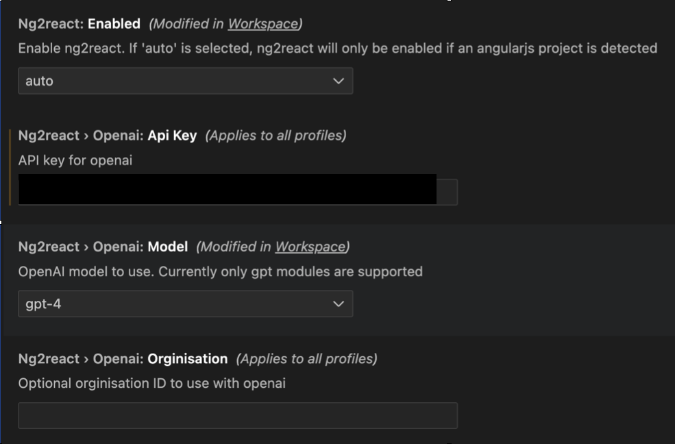
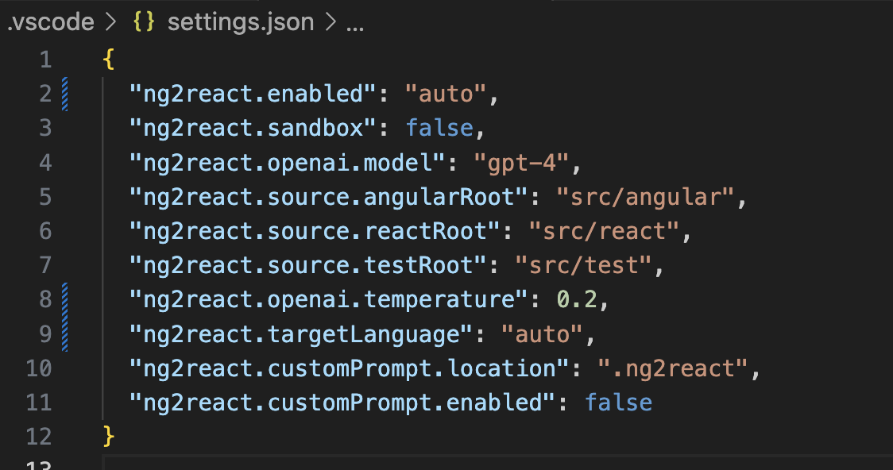

Getting Started
- Get an OpenAI API key from https://openai.com/
- Add the OpenAI API key to your IDE extension settings
- Open an AngularJS project and ensure that the source roots are configured correctly
- Run the
ng2react: Check Connectioncommand - Install the
@ng2react/supportlibrary in your AngularJS project:npm install --save @ng2react/support
Project Recommendations
Testing, testing testing
The generated code is not guaranteed to be correct. It is generated by an AI model and may contain bugs. It is highly recommended that you write UI tests that will work for both AngularJS and React.
If you currently use Protractor, you may want to consider switching to Cypress. Cypress is a modern testing framework that is much easier to use and maintain than Protractor. It also supports both AngularJS and React.
Good behavioural tests will help you catch bugs in the generated code and have confidence that parity has been achieved.
Configuration
Important configuration options.
OpenAI Settings
ng2react.openai.apiKey: The OpenAI API key to use for generating React components from AngularJS components.ng2react.openai.model: The OpenAI engine to use for generating React components from AngularJS components. Defaults togpt-4.ng2react.openai.temperature: The OpenAI temperature to use for generating React components from AngularJS components. Defaults to0.2.ng2react.openai.orginization: An optional organization ID assiciated with your OpenAI account and can be used to prevent OpenAI from using your code to train their models.

Project Settings
ng2react.source.angularRoot: The source root of your AngularJS code. Defaults tosrc.ng2react.source.reactRoot: The source root of your AngularJS code. Defaults tosrc.ng2react.source.testRoot: The source root where React unit tests should be generated. Defaults tosrc/test.

Examples
Have a look at some examples in @ng2react/examples